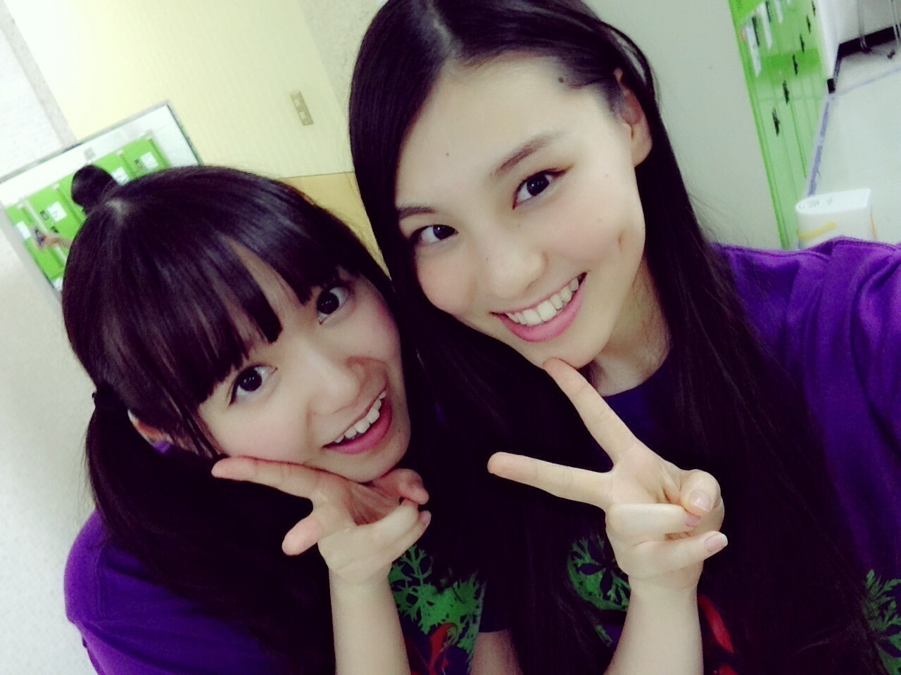
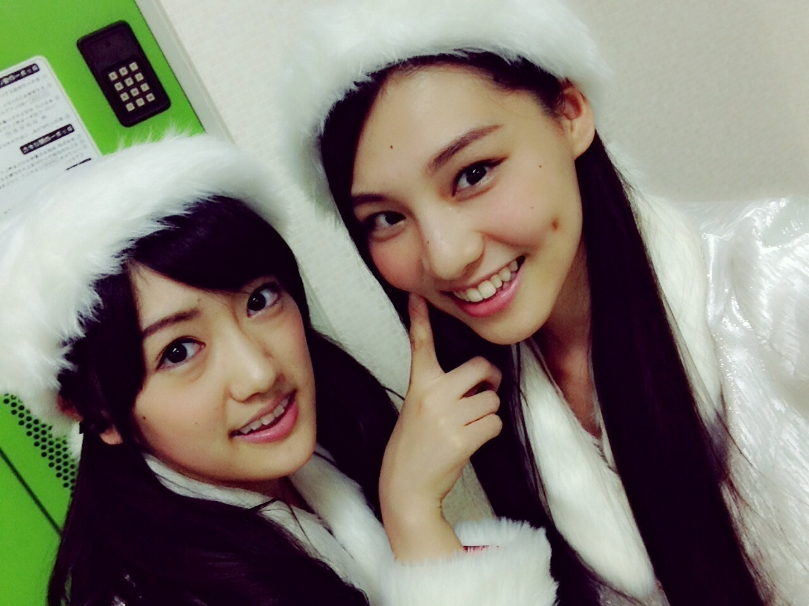
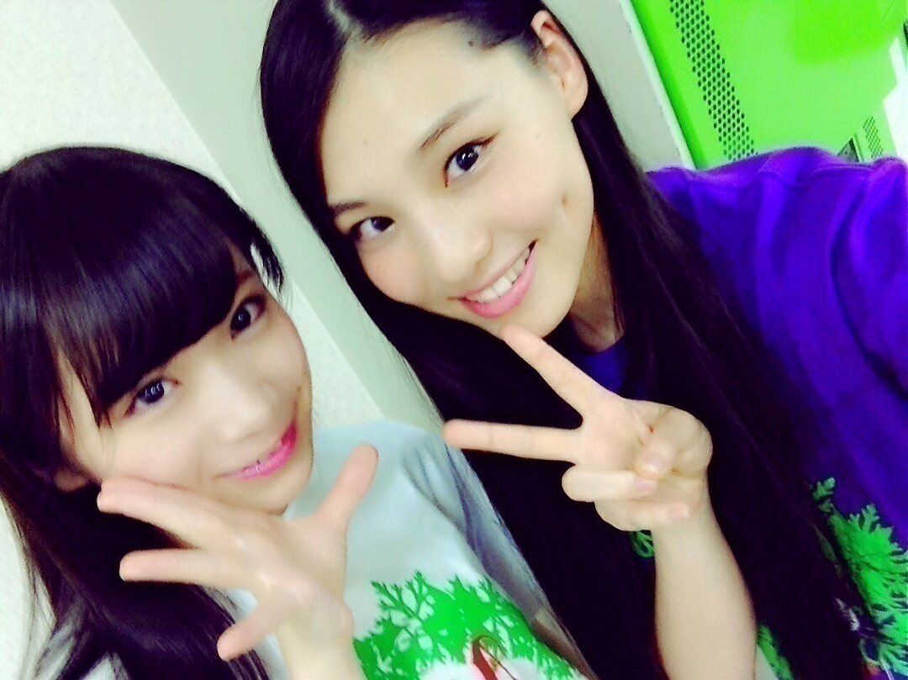
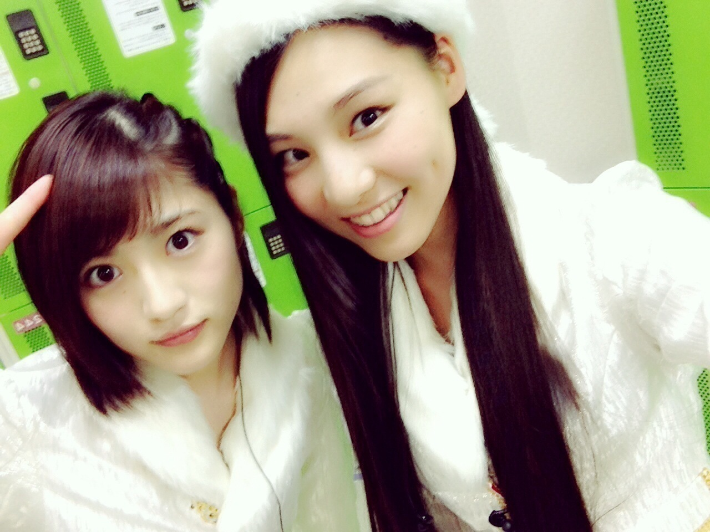
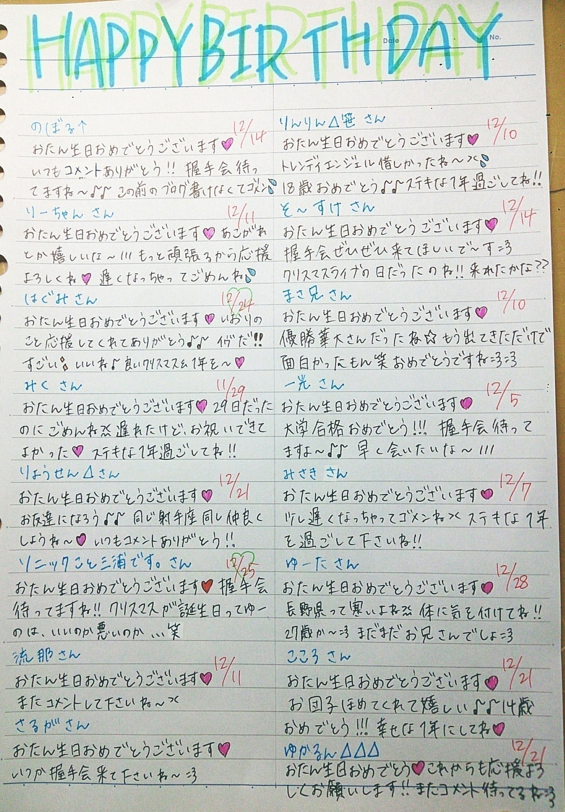
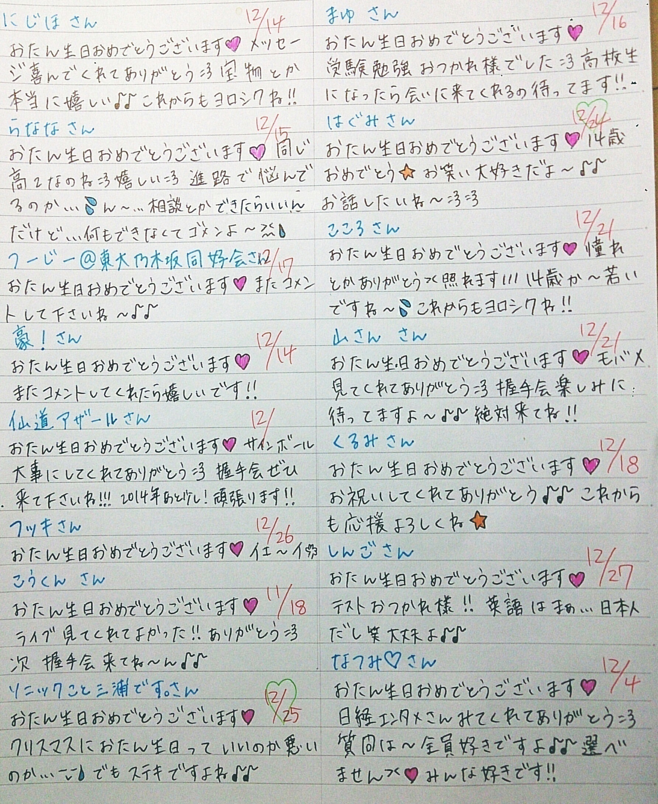
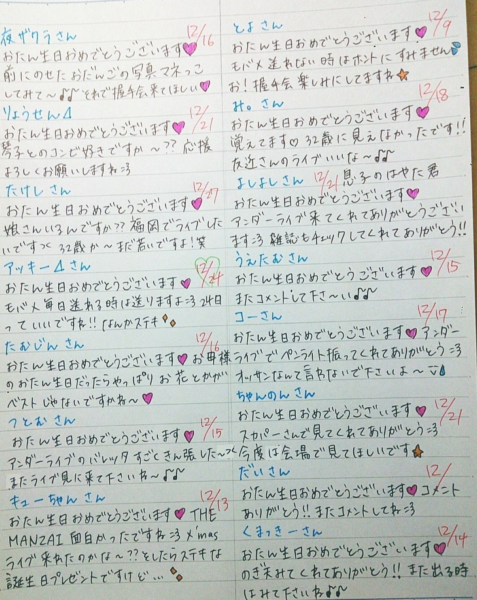
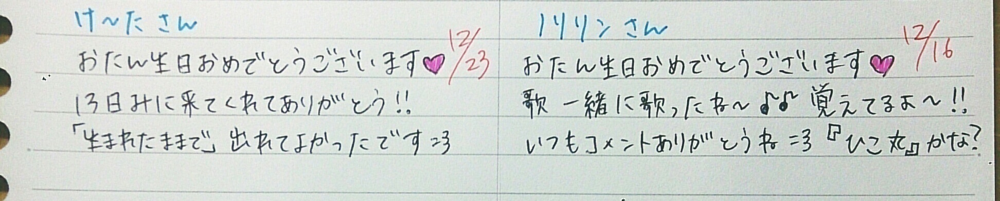
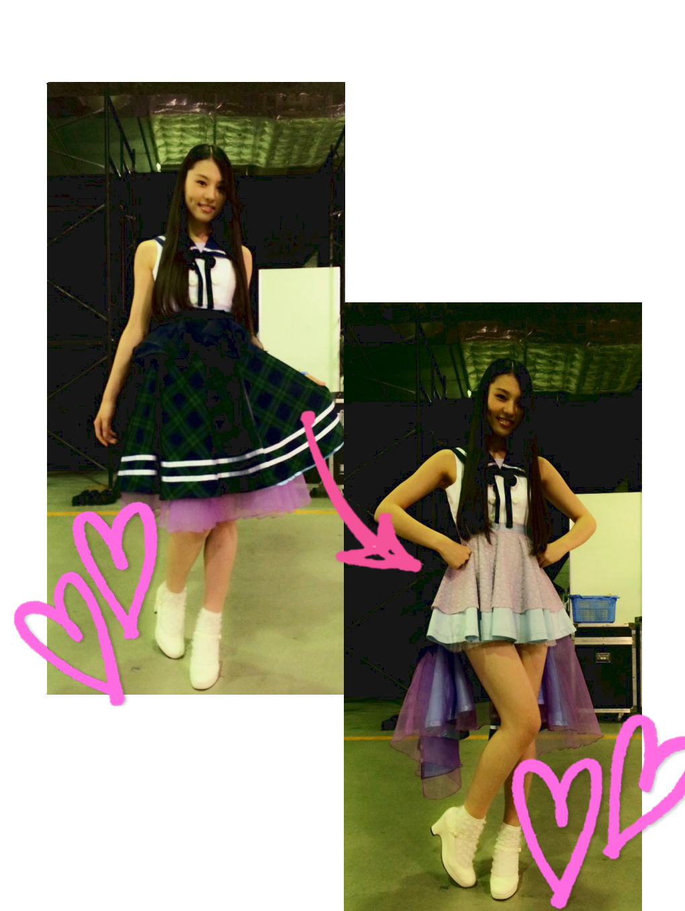

| 2014/12 20 Sat | (*いおり_(．．*)vol.18) |
みなさんこんばんはー！
高校2年生17歳
さがらいおりです！
いおりサンタだよ♡
ライブ楽しかったです♪♪
タオル、サイリウムありがとう♡
クリスマスライブの時
たくさん先輩と写真撮りました♡

ひめかさん

ひなちまさん

まなつさん

若月さん
たくさん撮れて嬉しかった♡♡
~いおり庵~
 伊織ちゃんの好きな飲み物ってなぁ～に？？
伊織ちゃんの好きな飲み物ってなぁ～に？？
炭酸ジュースとオレンジジュース♡
年末年始チェックする番組あったら教えて？
12/25 とんねるずのみなさんのおかげでした～年末特大SP～
12/29 オールザッツ漫才
12/31絶対に笑ってはいけない大脱獄24時
1/1 笑いの王者が大集結！ドリーム東西ネタ合戦
爆笑ヒットパレード
1/2 ウンナン極限ネタバトル！THE GOLD RUSH～イロモネアへの道～
1/5 ウンナン極限ネタバトル ザ・イロモネア10周年SP 笑わせたら100万円！
今のところこれかな( ¯﹀¯ )！
かぶってるのあるかな～？
THE MANZAIいおりんはどのコンビが一番面白かった？
いおり的には
決勝の最後の 3 組が
一番面白かったと思ったから、
すごい嬉しかったよ♪♪
アキナさんは最近めっちゃ好きになった！！
トレンディエンジェルさんは
実は、前の高校の文化祭で
最終日に来てくれた事があって、
それからずっと応援してたから
THE MANZAIで観れて
ホントに嬉しかった♡
しかも決勝で、最後まで残ってくれたことも嬉しかった！！
斉藤さんのキャラがツボなんです( ¯﹀¯ )
華大さんはもうホントに
面白かったですね！！！
優勝おめでとうございます♪♪
副賞でミレニアムズに出ることになったから
それも楽しみ♪♪
ワイルドカードは
コマンダンテさんが気になった！
あ！みなさん
国民ワラテン参加したー？？
THE MANZAIの入場曲がいつものじゃなかったよね？
THE MANZAIは毎年あれだよー！
M-1が「Because We Can」だよ！
ちなみに、夏にM-1復活するらしいですよ！！！
詳しくはいおり分からないけど(>_<)
いおりちゃんは好きな女性芸人さんいる？
いおりはね～、
アジアンの馬場園さんが一番好き♡
でも友近さんも好きだし、
いとうあさこさんも好き♡
あと、ニッチェさんも好きだし、
渡辺直美さんも好きだよ♡
たんぽぽさんも森三中さんも好き♡
いおりちゃんはクリスマス好き？？
うーん、
普通！
クリスマスはチキン食べられるから楽しみ♡
それ以外はとくにクリスマスだから
ウキウキとかはないかな～
サンタさんも来ないしね、、(。-∀-)
お誕生日の方にメッセージ(´,,•ω•,,)♡




AKB48さんの紅白対決に
出場させていただきました！！

衣装も作っていただいていて
ミニスカート恥ずかしかった//
さし坂46として、
何度目の青空か？披露しました♪♪
すっっごく緊張しました、、
あ！この前YOU PAPERさんに
取材をしていただきました！！
1 月号に載ります♪♪
チェックお願いしまーす *˙︶˙*)ﾉ"
12/23の握手会
久しぶりで楽しみですね～：）
来てくれる方は楽しみにしててね♡
遠征の方とかは
雪がたくさん降ってたりして
大変だと思うけど、
無理せずに気を付けて来てくださいね(>_<)！
i o r i .

コメント(413)
2014/12/20 21:18